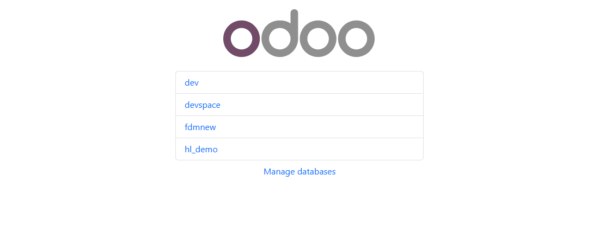
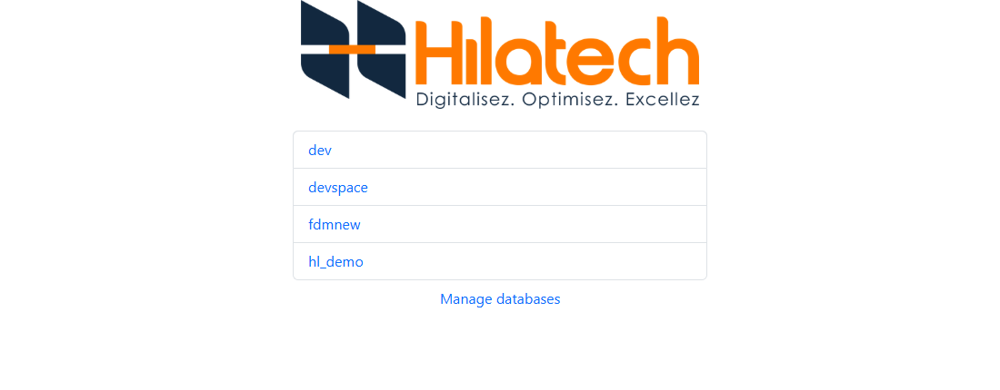
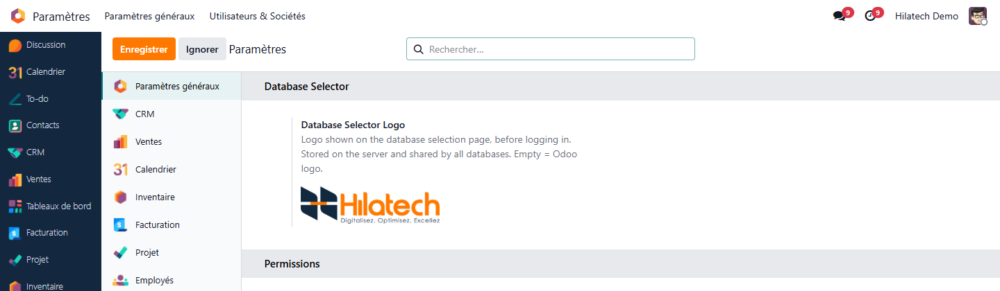

Database Page • Odoo 19
Database Selector Logo
Replace the Odoo logo on the database selection page with your own logo, from Settings. No code, no file to edit.
Odoo 19CommunityFree
Your brand from the very first screen
The database selection page is the first thing your users see, and it still shows the Odoo logo. This small companion of the Odoo 19 Backend Theme lets you upload your own logo from Settings, in one click.
Key features
01
One upload
Settings > Database Selector: choose an image, save. Remove it to get the Odoo logo back.
02
All common formats
PNG, JPEG, GIF, WebP and SVG. Any other file is refused with a clear message.
03
Clean display
The logo is scaled to fit the page, whatever its size or ratio.
04
Safe by design
No web assets, no change to your databases. SVG files are served with a policy that blocks scripts.
05
Works on its own
Usable alone, or together with the Odoo 19 Backend Theme.
06
Multilingual
Translated in English, French, German and Spanish.
Screenshots

Default Odoo logo

Your logo, set from Settings

The setting in Settings > Database Selector
Installation
One configuration line is required, because this page is shown before any database is chosen.
1
Install the module
Apps > Database Selector Logo > Install.
2
Load it server-wide
In odoo.conf, add the module to the server-wide modules, then restart Odoo.
3
Upload your logo
Settings > Database Selector > Database Selector Logo > Save.
server_wide_modules = base,web,hilatech_db_selector_logo
The logo is stored on the server (Odoo data directory) and is shared by all databases of that server.
Technical information
| Odoo version | 19.0 - Community |
| Dependencies | base_setup |
| Price | Free |
| Server configuration | server_wide_modules = base,web,hilatech_db_selector_logo |
| Web assets | None (safe to load server-wide) |
| Languages | English, French, German, Spanish |
| License | LGPL-3 |
Page des bases • Odoo 19
Logo du sélecteur de bases
Remplacez le logo Odoo de la page de sélection de la base de données par le vôtre, depuis les Paramètres. Aucun code, aucun fichier à modifier.
Odoo 19CommunityGratuit
Votre marque dès le premier écran
La page de sélection de la base de données est la première chose que voient vos utilisateurs, et elle affiche encore le logo Odoo. Ce petit compagnon du thème Backend Odoo 19 vous permet d'importer votre logo depuis les Paramètres, en un clic.
Fonctionnalités clés
01
Un seul import
Paramètres > Sélecteur de bases : choisissez une image, enregistrez. Supprimez-la pour retrouver le logo Odoo.
02
Tous les formats courants
PNG, JPEG, GIF, WebP et SVG. Tout autre fichier est refusé avec un message clair.
03
Affichage soigné
Le logo est ajusté à la page, quelle que soit sa taille ou ses proportions.
04
Sûr par conception
Aucun asset web, aucune modification de vos bases. Les fichiers SVG sont servis avec une politique qui bloque les scripts.
05
Autonome
Utilisable seul, ou avec le thème Backend Odoo 19.
06
Multilingue
Traduit en anglais, français, allemand et espagnol.
Captures d'écran
Logo Odoo par défaut
Votre logo, défini dans les Paramètres
Le réglage dans Paramètres > Sélecteur de bases
Installation
Une ligne de configuration est nécessaire, car cette page s'affiche avant le choix de la base.
1
Installez le module
Applications > Database Selector Logo > Installer.
2
Chargez-le côté serveur
Dans odoo.conf, ajoutez le module aux modules serveur (server-wide), puis redémarrez Odoo.
3
Importez votre logo
Paramètres > Sélecteur de bases > Logo du sélecteur de bases > Enregistrer.
server_wide_modules = base,web,hilatech_db_selector_logo
Le logo est enregistré sur le serveur (dossier de données d'Odoo) et partagé par toutes les bases de ce serveur.
Informations techniques
| Version d'Odoo | 19.0 - Community |
| Dépendances | base_setup |
| Prix | Gratuit |
| Configuration serveur | server_wide_modules = base,web,hilatech_db_selector_logo |
| Assets web | Aucun (chargement serveur sans risque) |
| Langues | Anglais, français, allemand, espagnol |
| Licence | LGPL-3 |